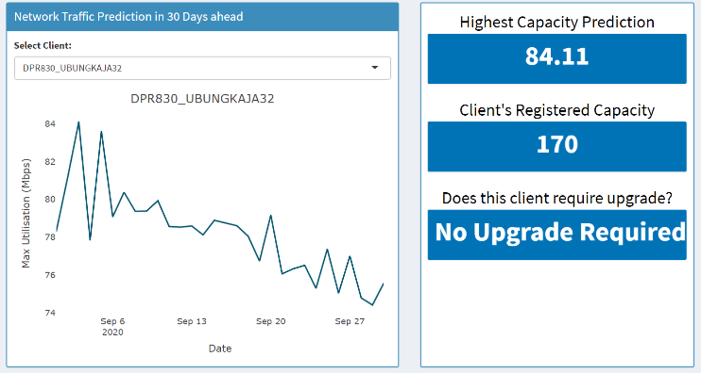

Network Bandwidth Prediction
Background
Mobile Backhaul is one of solutions when tower provider delivered end to end connection from base station to customer Core Network via fiber optic as physical interfaces and metro ethernet network as transport technology.
Mobile Backhaul technology components include:
- Access Network: Gives user (devices) access to telecommunication service
- Backhaul: Connects the Access network to Core Network
- Core Network: Interconnect networks, exchange information with another sub-network

A forecasting model was planned to be inserted into the system, therefore the forecasting model was developed in order to:
- Cope with with the increase of bandwidth capacity
- Analyze the client's data efficiently or the benefit of the business, both for the service and clients.
- Develop further business intelligence tools
Methodology
Steps in developing the models include:
- Data Pre-processing: handling anomalies, data structure transformationt
- Model Training: hyperparameter tuning, selecting two best parameter combinations
- Perfomance Comparison: Compare the error and result generated by the models
- Model Implementation: Data visualizatoin through Dashboard

The machine learning and dashboard modelling, including the data processing were performed using R programming.
The dataset are obtained from one of the client's daily network capacity usage data. The train data was ranged from 2/1/2019 to 8/31/2020, where as the test data was ranged 9/1/2020 to 9/30/2020. The model was planned to constantly train the new data to generate the forecast value of the next 30 days.
Forecasting Result
FARIMA (4,0.2,1) model achieves the least error with RMSE, MAE and MAPE of 11.762, 9.329 and 11.950 respectively. The models’ error values do not show significant differences.


ANN-MLP forecast result resembles more the variation of the past data, where as FARIMA forecast values creates a single straight line in other words, almost identical forecast values.
Consequently, ANN-MLP with parameter of (4,0.2,1) was selected as the best model. This model was used to generate the forecast value of the next 30 days in the dashboard.
Model Implementation
The dashboards provides the insights of data which includes the average, minimum and maximum capacity usage.
Additionaly the forecast value of the next 30 days as shown in the image above. It also provides options for the user to select the desired client's usage data and whether the clients require to upgrade their usage data based on their registered capacity.
See the published paper here